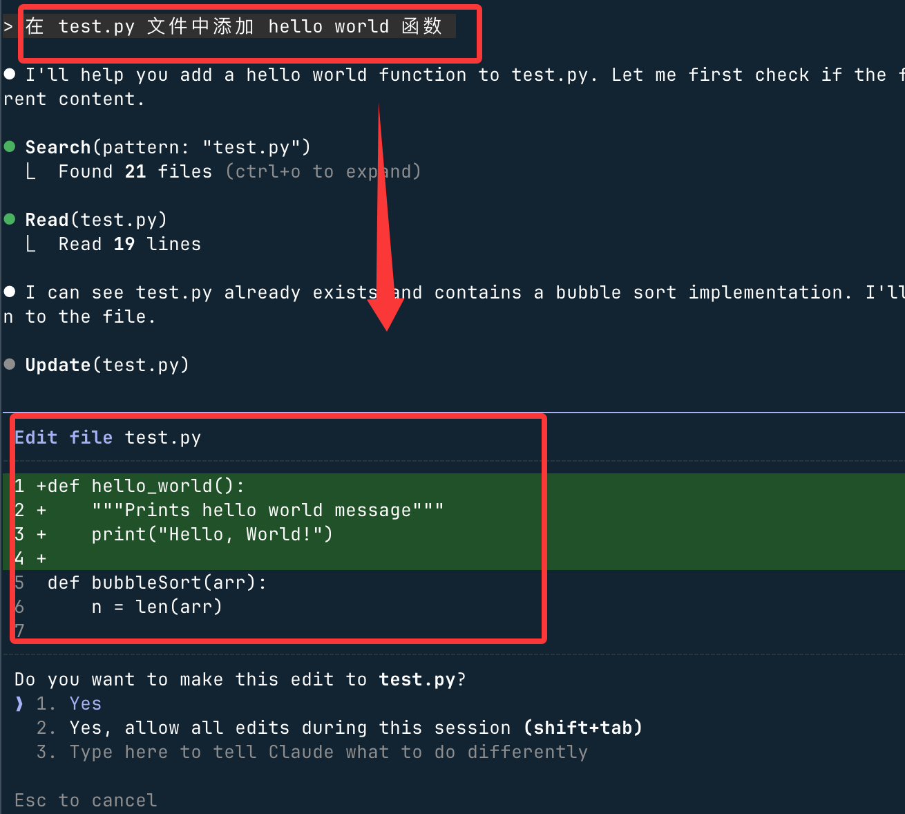

Claude Code Installation and Usage
Before installing, let's first understand the different ways to use Claude Code, and choose the one that suits you best.
| Method | Suitable for | Advantages | Disadvantages |
|---|---|---|---|
| Web | Complete Beginners | No installation required, just open the browser and use it | Relatively limited functionality, cannot deeply integrate local code |
| CLI (Command Line) | Developers with some experience | Full-featured, highly integrated, closest to the original design intent | Requires familiarity with command line operations |
| Editor Integration (VS Code / Cursor, etc.) | Everyday Developers | Seamlessly integrates into existing workflow, no need to switch windows | Depends on plugins and environment configuration |
Selection Suggestions:
- If you area complete beginner, first visithttps://claude.ai/Use the Web version to try it out and get familiar with Claude's conversation style.
- If you want toreally use it for development, directly learnCLI (Command Line), as it has the most complete features
- Once you are proficient with the CLI, consider based on your needseditor integration
Currently Claude Code also offers a desktop version, which can be downloaded from the following address:https://claude.com/download

This tutorial focuses onthe CLI method, because it is the most stable, the most versatile, and the closest to Claude Code's original design intent.
Installing Claude Code CLI
1. Prerequisites
Before installation, you need to prepare the following two items:
① Claude account
- Visitclaude.aiRegister an account
- If you are already using Claude web chat, your account already exists, so you can skip this step.
- If you plan to use domestic large models (such as DeepSeek, Minimax, GLM, etc.), you can temporarily skip account registration; later sections will explain how to switch.
② Command-line tool
- Mac / Linux：Just open the system's built-in Terminal.
- Windows：Open PowerShell, or install and use WSL (Windows Subsystem for Linux).
2. Installing via Official Script (Recommended)
The official one-click installation script is provided. Choose the corresponding command based on your system and run it:
macOS、Linux、WSL：
curl -fsSL https://claude.ai/install.sh | bash
Windows PowerShell：
irm https://claude.ai/install.ps1 | iex
Windows CMD：
curl -fsSL https://claude.ai/install.cmd -o install.cmd && install.cmd && del install.cmd
Homebrew:
brew install --cask claude-code
WinGet:
winget install Anthropic.ClaudeCode
After installation, verify whether the installation was successful:
claude --version
If the terminal outputs a version number (e.g.,1.x.x), the installation was successful.
2.1.81 (Claude Code)
3. Installing via npm (Not Recommended)
The official recommendation no longer favors npm installation; it is recommended to prioritize the official script above. If you do need to install via npm, first confirm that Node.js is installed:
node --version
If it outputs a version number (e.g.,v18.17.0), it is installed. If it prompts that the command does not exist, please go tonodejs.orgdownload and install.
After confirming Node.js is available, run the following command to install Claude Code:
npm install -g @anthropic-ai/claude-code
Wait for the installation to complete (may take a few minutes), then verify:
claude --version
4. Updating Claude Code
You can update directly with the following command:
claude install
Or:
claude update
Claude Code will, when starting and running,automatically check for updates, after the background download completes, it will take effect on the next startup. The automatic update related configuration is written insettings.json:
Example
"autoUpdatesChannel": "stable" // Update channel: stable (stable version, recommended) or beta (test version)
}
You can also configure it inside Claude Code through the/configcommand.
If you don't need automatic updates, you cansettings.json 的 envdisable it in:
Example
"env": {
"DISABLE_AUTOUPDATER": "1" // Set to "1" to disable automatic updates; "0" or delete this line to restore automatic updates
}
}
Claude Code installed viaHomebrew 或 WinGetdoes not support automatic updates; you need to manually run the following command to update:
# macOS Homebrew brew upgrade claude-code #Windows WinGet winget upgrade Anthropic.ClaudeCode
5. Troubleshooting Common Installation Issues
Issue 1: Promptnpm command not found
- Cause:Node.js is not installed on the computer.
- Solution:Go tonodejs.orgdownload and install Node.js, then re-run the installation command after installation.
Issue 2: Promptpermission denied
- Cause:The current user does not have global installation permissions.
- Solution (Mac / Linux):Add before the command
sudoto elevate permissions:sudo npm install -g @anthropic-ai/claude-code
- Solution (Windows):Right-click PowerShell, select "Run as administrator", then re-run the installation command.
Issue 3: Installation is very slow or stuck
- Cause:Network access to overseas sources is slow.
- Solution:Add
--registryparameter to switch to a domestic mirror source:npm install -g @anthropic-ai/claude-code --registry=https://registry.npmmirror.com
Recommended terminals:If you find the default terminal experience average, the following terminals offer a better experience when using Claude Code:
- WezTerm (cross-platform):https://wezterm.org/
- Alacritty (cross-platform):https://alacritty.org/
- Ghostty（Linux / macOS）：https://ghostty.org/
- Kitty（Linux / macOS）：https://github.com/kovidgoyal/kitty
More terminal tools reference:https://www.runoob.com/w3cnote/terminal-tools.html
Uninstalling Claude Code
Choose the corresponding uninstall command according to your original installation method.
1. Official Script Installation (Native Installation)
Delete Claude Code's executable file and version file:
macOS、Linux、WSL：
rm -f ~/.local/bin/claude rm -rf ~/.local/share/claude
Windows PowerShell：
Remove-Item -Path "$env:USERPROFILE\.local\bin\claude.exe" -Force Remove-Item -Path "$env:USERPROFILE\.local\share\claude" -Recurse -Force
2. Homebrew Installation
brew uninstall --cask claude-code
3. WinGet Installation
winget uninstall Anthropic.ClaudeCode
4. npm Installation
npm uninstall -g @anthropic-ai/claude-code
5. Deleting Configuration Files (Optional)
The above commands only uninstall the executable program; configuration files and history records are not automatically deleted. If you want to completely clear all data (including settings, authorized tools, MCP server configurations, and session history), you need to additionally run the following commands:
⚠️ Deleting configuration files isIrreversibleoperation. All local settings and history will be permanently lost. Please confirm before proceeding.
macOS、Linux、WSL：
# 删除全局用户设置和状态 rm -rf ~/.claude rm ~/.claude.json # 删除当前项目的本地设置（在项目目录中执行） rm -rf .claude rm -f .mcp.json
Windows PowerShell：
# 删除全局用户设置和状态 Remove-Item -Path "$env:USERPROFILE\.claude" -Recurse -Force Remove-Item -Path "$env:USERPROFILE\.claude.json" -Force # 删除当前项目的本地设置（在项目目录中执行） Remove-Item -Path ".claude" -Recurse -Force Remove-Item -Path ".mcp.json" -Force
Logging into Claude Code
1. First-Time Login Process
Start Claude Code in your project directory:
claude
On first launch, Claude Code will guide you through the login. You can also manually enter the login command after the interface appears:
/login
Just follow the prompts in the terminal to complete login authorization. After logging in, credentials are saved locally,and you don't need to log in again on next startup.If you need to switch accounts, just re-run/loginit.
2. Supported Account Types
You can log in with any of the following account types:
① Claude subscription account (recommended)
- Claude Pro: Pro
- Claude Max: Max
- Claude Teams: Team
- Claude Enterprise: Enterprise
② Claude Console account (API access)
- Accessed via API, billed using prepaid credits
- Suitable for developers and scenarios requiring programmatic access
- The same email address can have both a subscription account and a Console account
3. Automatically Creating Workspace (Console Account)
When you authenticate Claude Code with a Claude Console account for the first time, the system will automatically create a workspace named"Claude Code"in your Console, used to:
- Centrally track all Claude Code API usage costs
- Make it easy to manage Claude Code usage for multiple people in an organization
Starting the First Session
1. Starting in the Project Directory
Open a terminal, switch to your project directory first, then start Claude Code. This way Claude can read your project files and provide targeted assistance:
cd /path/to/your/project claude
2. Welcome Screen
After startup, you'll see the Claude Code welcome screen, including current session information, recent conversation history, and the latest update notes:

3. Viewing Available Commands
In the input box, type/helpto view all available features:
/help
Type/resumeto resume a previously interrupted conversation:
/resume
Type directly in the input box,/and a completion list of all available commands will appear:

For detailed credential management information, refer to theCredential Managementsection of the official documentation.
Asking the First Question
1. Understanding the Project
After entering the project directory and starting Claude Code, you can first have it analyze your codebase:
what does this project do?
Claude will automatically read the project files and give a project overview.
Claude Code will automatically read files as needed—you don't need to manually copy and paste file contents into the conversation; it will find the context it needs on its own.
2. More Project-Related Questions
You can also ask for more specific information:
what technologies does this project use?
where is the main entry point?
explain the folder structure
3. Asking About Claude Code's Capabilities
You can also directly ask Claude what it can do:
what can Claude Code do?
how do I use slash commands in Claude Code?
can Claude Code work with Docker?
Claude can access its own documentation and can accurately answer questions about its own features and capabilities.
Making the First Code Modification
1. Try a Simple Task
Let's have Claude Code actually write code. We'll create a test directory and ask it totest.pyadd a Hello World function to the file:
cd runoob-test # 进入测试目录（没有则新建一个） claude # 启动 Claude Code
After entering the interface, type:
在 test.py 文件中添加 hello world 函数
Claude Code will show the suggested code changes and request your confirmation before executing them. Selectyesand press Enter to apply:

2. Claude Code's Modification Workflow
For every code change, Claude Code follows this process:
- Locate relevant files: Automatically locate the files that need to be modified in the project
- Show suggested changes: Display the changes to be made in a diff view
- Request your approval: Must be confirmed by you before execution
- Execute the edit: Write to the file after confirmation
You can approve each change individually, or enable "Accept All" mode in the current session for batch confirmation.
Using Git Features
Claude Code makes Git operations as easy as everyday conversation—just describe what you want to do in natural language.
1. Basic Git Operations
View modified files:
what files have I changed?
Commit changes (Claude automatically generates the commit message):
commit my changes with a descriptive message
2. More Complex Git Operations
Create a new branch:
create a new branch called feature/quickstart
View recent commit history:
show me the last 5 commits
Help resolve merge conflicts:
help me resolve merge conflicts
Fixing Bugs or Adding Features
1. Adding New Features
Describe the feature you want to add in natural language, and Claude Code will find the right place and implement it:
add input validation to the user registration form
2. Fixing Existing Issues
Describe the bug symptoms and let Claude locate and fix it:
there's a bug where users can submit empty forms - fix it
3. Claude Code's Issue-Handling Process
- Locate relevant code: Find the files and functions related to the issue in the codebase
- Understand the context: Analyze the code logic to understand the root cause of the issue
- Implement the solution: Provide modification suggestions and show the diff
- Run tests: If tests exist in the project, Claude will try to run them to verify the fix
Other Common Workflows
Code Refactoring
refactor the authentication module to use async/await instead of callbacks
Writing Tests
write unit tests for the calculator functions
Updating Documentation
update the README with installation instructions
Code Review
review my changes and suggest improvements
Claude Code is your AI pair programming partner.Talk to it like you would to an experienced colleague—describe what you want to achieve without sticking to specific command formats; just express it in natural language, and it will help you find the best way to implement it.
Common Commands Quick Reference
Command Line Commands (Used in Terminal)
| Command | Function | Example |
|---|---|---|
claude |
Start interactive mode (most commonly used) | claude |
claude "任务描述" |
Execute a one-time task and then exit interactive mode | claude "fix the build error" |
claude -p "查询内容" |
Execute a single query and exit immediately (suitable for script integration) | claude -p "explain this function" |
claude -c |
Continue the most recent conversation in the current directory | claude -c |
claude -r |
Select and resume a conversation from history | claude -r |
claude commit |
Have Claude automatically generate a Git commit message and commit | claude commit |
claude update |
Manually update Claude Code to the latest version | claude update |
claude --version |
View the currently installed version number | claude --version |
Commands Within Interactive Mode (Used in Claude Code Interface)
| Command | Function | Example |
|---|---|---|
/help |
Show all available commands and their descriptions | /help |
/login |
Log in to an account or switch to another account | /login |
/resume |
Resume a previously interrupted conversation from history | /resume |
/clear |
Clear the current conversation history and start a new session | /clear |
/config |
View and modify Claude Code configuration | /config |
exit 或 Ctrl+C |
Exit Claude Code and return to the terminal | exit |
Click to Share Notes
<p style="font-size:14px;">The note must be an extension of this article's content!</p><br> <p style="font-size:12px;"><a href="../tougao.html" target="_blank">Article submission, click here</a></p> <p style="font-size:14px;"><a href="../w3cnote/runoob-user-test-intro.html" target="_blank">How to get a registration invitation code</a></p> <h3 class="text-muted"><i class="fa fa-info-circle" aria-hidden="true"></i> You must <a href=";.html" class="runoob-pop">log in</a> before sharing notes!</h3> <p><a href="../w3cnote/runoob-user-test-intro.html" target="_blank">How to get a registration invitation code</a></p>